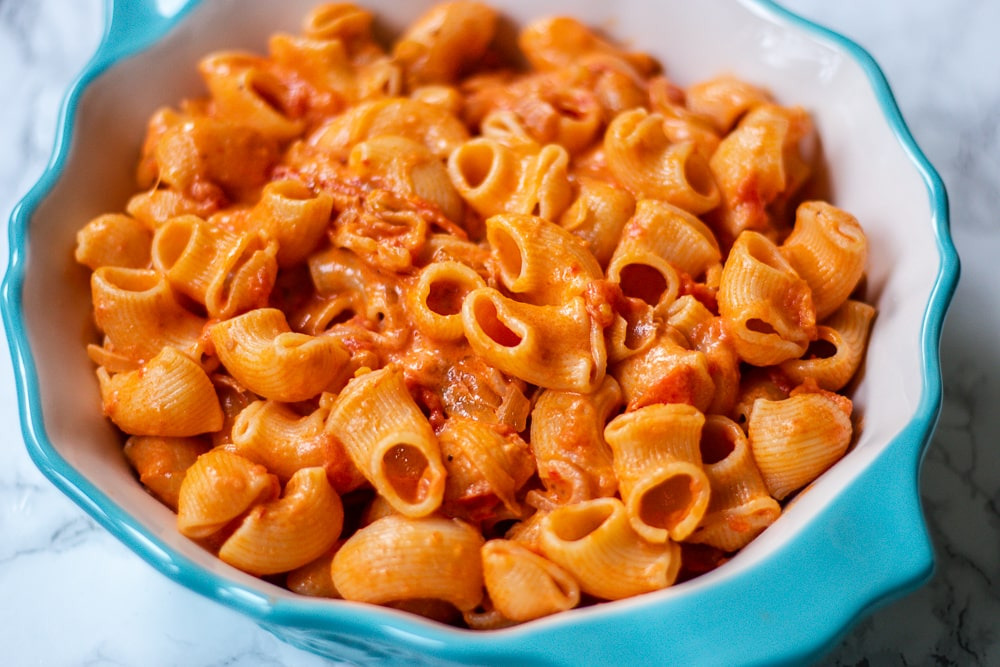

Spicy Rigatoni Recipe

Description
Not only will this dish impress anyone you serve it to, but for less than $10 a person,
it's a budget-friendly alternative to dining out. From the creamy texture to the kick
of spice, this copycat Carbone spicy rigatoni lets you enjoy a renowned dish in the comfort
of your own home.
Ingredients:
- 2 cups pasta (pipette, rigatoni or lumache)
- 1.5 tablespoons olive oil
- 1 shallot , finely diced
- 3 garlic cloves , minced
- ½ tablespoon Calabrian chili paste
- ¼ cup Italian tomato paste
- ¼ cup vodka, one shot
- ½ cup heavy cream
- ⅓ cup starchy pasta water
- 1 tablespoon unsalted butter
- 4 tablespoons Parmigiano Reggiano
Steps:
- In a pot, start by boiling the pasta. Make sure you generously salt the water
with two big pinches of salt. The water should be as salty as the sea, this is
your only chance to flavor the pasta.
- As the pasta boils, start on the sauce. In a large pan, on medium-low heat, add the oil.
- Now, let the oil heat up and add in the finely diced shallots. Cook the shallots until
translucent. Stir in the minced garlic and Calabrian chili pepper paste, and cook for 1 minute.
- Add the tomato paste and cook for 2 minutes as you stir. Pour in the vodka and cook
it off for a minute or until the alcohol evaporates. Add the heavy cream and mix well.
- Reduce the heat to low.
- When the pasta is al-dente, take some of the starchy pasta cooking water and add it into
the sauce. Season with a pinch of salt (pepper is optional).
- Stir in the butter, fresh parmesan cheese, and adjust for seasoning.
- Fold in the al-dente pasta and enjoy!
Home